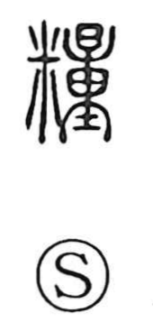

糧

Kun: kate | On: ryo
provisions ・ food ・ sustenance
Explanation
糧 is a phono-semantic character: 米 supplies the sense of grain or rice, while 量 provides the sound ryō. In its older form, 量 depicts a sack with a spout used to measure out cereals and also means “to measure.” Joined with 米, it evokes measuring rice by the sack, and thus came to mean a fixed allowance of food—provisions—especially the food one carried when traveling. From this developed the broader sense of sustenance or rations. The character is also written 粮.